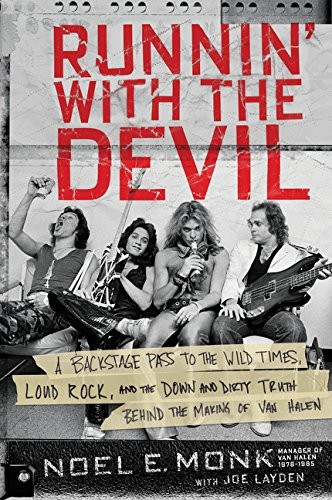
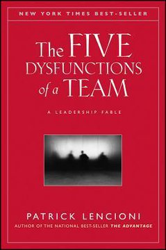

Módulo 06 / Apartado 2 de 6
Van Halen, o qué pasa sin orquestador
El síndrome Apolo de Belbin explicado, y luego el mejor caso de estudio que hay: una banda irrepetible desmontándose a la vista de todos por echar al único que la sostenía.
Primero, el hallazgo incómodo
Antes de la historia, el dato que la explica. Es de Meredith Belbin, investigador británico que en los años setenta hizo una cosa muy sencilla en el Henley Management College: puso a directivos a jugar a juegos de gestión por equipos, cientos de veces, y apuntó qué equipos ganaban.
Y como cualquiera haría, probó a montar el equipo perfecto: cogió a los que puntuaban más alto en capacidad analítica y los juntó a todos. A esos equipos los llamó equipos Apolo.
Los equipos Apolo rendían peor. No un poco peor: sistemáticamente por debajo de equipos con miembros menos brillantes y más variados. Belbin lo repitió lo bastante como para descartar la casualidad.
Y encontró por qué. No es misterioso, y lo reconocerás:
Uno. Se pasaban el juego debatiendo, cada uno intentando convencer a los demás, y nadie cedía porque todos tenían argumentos. Dos. Cada uno tiraba por su línea y no había convergencia. Tres. Las tareas que nadie reclamaba —las aburridas, las de coordinar, las de rematar— no las hacía nadie, porque a nadie le parecían dignas. Cuatro. Cuando por fin se daban cuenta, sobrecorregían y se volvían exageradamente amables, que tampoco funciona.
Belbin sacó de ahí sus nueve roles de equipo —cerebro, investigador de recursos, coordinador, impulsor, monitor-evaluador, cohesionador, implementador, finalizador y especialista— y la tesis de que un equipo necesita cobertura de roles, no acumulación de talento.
Fíjate en que esto es la otra cara del módulo 4. Allí Syed decía que un equipo de clones deja territorio sin cubrir. Aquí Belbin dice algo peor: un equipo de cracks del mismo tipo no solo cubre menos, además se pelea. Y ahora sí, la historia.
Van Halen, que era un equipo Apolo de manual
Recuenco escribió esta turra en octubre de 2020, a los pocos días de morir Eddie Van Halen, y es de las mejores del corpus. La tesis: Van Halen se deshace por falta de un orquestador cognitivo, y es un caso de estudio perfecto porque todo pasó a la vista de todos.
Dentro de esa banda había cinco arquetipos que, según él, aparecen en casi cualquier equipo de alto talento. Los describe sin nombres y sin piedad:
Y antes de romperse, la parte buena: la liminalidad
Hay una observación en la turra que vale por media clase de innovación. El heavy metal nace en Birmingham —Black Sabbath, Judas Priest—, una ciudad industrial y dura, y suena a eso: al mundo se viene a sufrir.
A los hermanos Van Halen, californianos y músicos brutales, el frontman les parecía un pintamonas. Pero tenía dinero, se movía en las altas esferas y tenía un sentido del espectáculo que ellos no tenían. Y de esa fricción sale algo que no existía:
Nunca antes de los Van Halen el heavy había dado ganas de follar. Como mucho, de sacar el hacha o suicidarse.
Esto es lo que llama liminalidad —lo viste en el módulo 4 con los agujeros de conejo—: la innovación se produce en los puntos de fricción entre áreas aparentemente inconexas. Sin el frontman, dos hermanos tocando muy bien en fiestas de Pasadena. Sin los hermanos, un showman sin repertorio. La fricción que los hacía insoportables entre sí era la misma que los hacía irrepetibles.
El orquestador: Noel Monk
La banda aguantó unos años. Y aguantó por una razón concreta y con nombre: Noel Monk, su mánager durante la época dorada. Lo que hizo cabe en tres puntos:
Un tipo que no solo no entendía a la banda, sino que había montado pases privados en el backstage donde pasaba de todo. Es decir: el riesgo no venía de fuera, venía de quien se suponía que los protegía.
Decenas de veces. Incluido un bol de guacamole que Eddie Van Halen lanzó a su cantante y que acabó en la cara de Steve Perry, el de Journey. Esa clase de trabajo, que no aparece en ninguna descripción de puesto.
No tenían nada. Con Monk pasó a suponer en torno al 60% de sus beneficios. Incluida la parte de ir con gorilas a por los falsificadores que vendían en la puerta de los conciertos.
Y entonces le despidieron. Justo después del disco más exitoso de su historia, 1984. El final del libro de Monk, según lo cuenta Recuenco, es patético en el sentido literal: Eddie Van Halen sollozando y diciéndole que había sido idea de su hermano.

El libro de esto Runnin' with the Devil: A Backstage Pass to the Wild Times, Loud Rock, and the Down and Dirty Truth Behind the Making of Van HalenEl libro del mánager, y uno de los dos que Recuenco señalaba ya en 2020 como lo mejor que había encontrado sobre orquestación. Vale por los excesos de una época en que las estrellas del rock podían hacer literalmente lo que quisieran, pero lo que aquí importa son los detalles de gestión: cómo se contiene a cuatro personas volátiles, cómo se construye un negocio alrededor y cómo se pierde todo cuando el que lo sostiene se va — Noel E. Monk y Joe Layden · 2017
Por qué le despidieron: los bes rodeados de ces
La explicación que da Recuenco es una regla vieja del mundo de la gestión y aquí funciona como un reloj. La versión clásica es de David Ogilvy, el publicista: si cada uno de nosotros contrata a gente más pequeña que él, seremos una empresa de enanos; si contratamos a gente más grande, seremos una empresa de gigantes.
La versión operativa: los A contratan a A. Los B contratan a C. Alguien que sabe que no es el mejor de la sala tiende, sin decirlo y a veces sin saberlo, a rodearse de gente que no le haga sombra. Y el que peor le cae es precisamente el que hace bien un trabajo que él no sabría hacer.
La traducción a tu organización. Si en una empresa las personas que sostienen la coordinación —las que hacen que las reuniones acaben en algo, las que traducen entre áreas, las que rematan— tienen menos reconocimiento y menos poder que las que producen piezas brillantes, ese sitio se va a partir. No hoy: el día que la que sostiene se canse. Y entonces todo el mundo dirá que fue una sorpresa.
El otro caso: el secundario
Hay una segunda turra que ataca lo mismo desde el deporte y que conviene tener a mano, porque la NBA es un laboratorio con estadísticas. Recuenco la usa para hablar del draft como un festival de decisiones bajo incertidumbre, y de la importancia del secundario: el tercer hombre que no aparece en los resúmenes y sin el cual el equipo no gana.
Su ejemplo recurrente es Luc Longley, el pívot australiano de los Chicago Bulls del segundo three-peat. Nadie compra su camiseta. Los otros dos nombres de ese equipo son de los más famosos de la historia del deporte. Y el equipo con él y el equipo sin él no son el mismo equipo.
La dinamita es básicamente nitroglicerina con un soporte, porque la nitroglicerina es altamente inestable.
Ese es el resumen del apartado. No basta con el talento. Hace falta el soporte. Y el soporte, que es lo que hace que la nitroglicerina sea utilizable en lugar de explotarte en la mano, es justo lo que parece que no aporta nada mientras funciona.
Fuentes de este apartado
Las turras de las que sale
Escrita a los pocos días de morir Eddie Van Halen, y una de las mejores del corpus. Los arquetipos del equipo, la liminalidad entre el heavy de Birmingham y el show business californiano, el papel de Noel Monk contado con detalle, y la explicación de por qué le echaron. Termina con la metáfora de la nitroglicerina y la dinamita.
El draft de la NBA como festival CPSTurra · 44 tweets · jun 2022El complemento deportivo. El draft es un ejercicio anual de decisión bajo incertidumbre extrema con datos públicos y consecuencias medibles, que es tan buen laboratorio como se puede pedir. De aquí sale también la idea del secundario y la tríada de la orquestación cognitiva aplicada a una plantilla.
El trabajo en equipos CPS, con la metáfora de Pirlo y GattusoTurra · 46 tweets · mar 2022La pareja que sostiene el centro del campo: uno pone el juego y el otro se parte la cara para que el primero pueda ponerlo. Es el mismo argumento del secundario y del soporte, y es el puente natural hacia el apartado siguiente, que va de la persona que hace que la mezcla no se corte.
Los libros
El experimento del que sale el síndrome Apolo y los nueve roles de equipo. Es un libro de investigación y se lee como tal, pero el hallazgo central —que un equipo de los mejores rinde peor que uno bien repartido— es de esas cosas que cambian cómo montas un equipo para siempre.
Runnin' with the DevilNoel E. Monk y Joe Layden · 2017Las memorias del mánager de Van Halen en su mejor época. Recuenco lo cita ya en la turra de orquestación de 2020 como uno de los dos mejores libros que había encontrado sobre el tema, y eso que es un libro de rock. Léelo por la gestión, quédate por las anécdotas.

The Five Dysfunctions of a TeamPatrick Lencioni · 2002La versión de manual de lo mismo, escrita como novela empresarial. Las cinco disfunciones se apilan: sin confianza no hay conflicto sano, sin conflicto no hay compromiso, sin compromiso no hay responsabilidad y sin responsabilidad nadie mira el resultado. Van Halen las tenía las cinco.